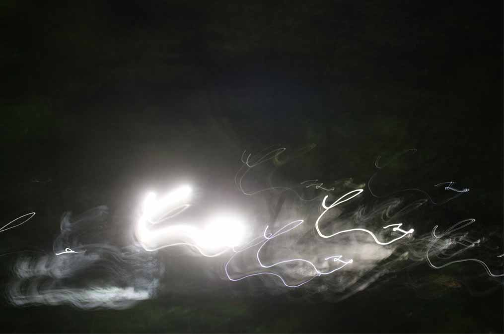

Indistinct Light:
a photographic exploration of how the world changes in darkness.
Adrift
Light trails dancing in the dark.
Blue Lights
Blue with orange light trails
Confusion
Light trails mixed in a confusing tangle
Boundaries
Looking into the beyond past the boundary fence.
Dark Spaces Between
Where does it lead?
Glow
a blurry light illuminates the way.

Haze
Do you know where you are? Do you know where you are going?
In the Trees
Up there, the world looks different.
More images from the project

All photographs were taken during late 2020-early 2021, reflecting the uneasy nature of the time.